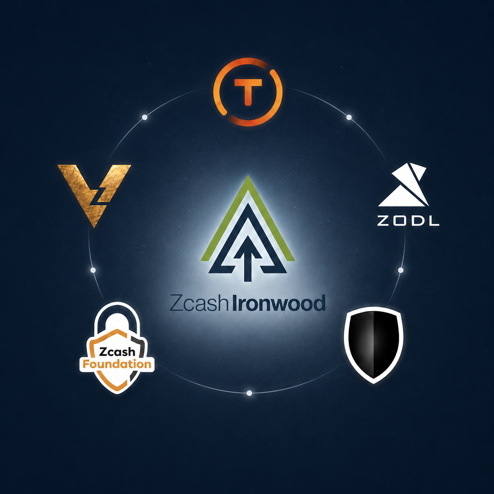

Ironwood

What Is Ironwood?
Ironwood is a Zcash network upgrade designed to make it possible for every user to independently verify the soundness of Zcash’s circulating supply. It is scheduled to activate as NU6.3 at block height 3,428,143, approximately July 28 at 12:00 p.m. UTC.
Ironwood was developed in response to a critical counterfeiting vulnerability discovered by Shielded Labs security researcher Taylor Hornby in Zcash’s Orchard shielded pool. The vulnerability was fixed through an emergency network upgrade led by the Zcash Open Development Lab (ZODL), and we believe it is unlikely to have been exploited. However, because Orchard’s transaction data is shielded, users cannot independently verify that no counterfeit ZEC was created before the vulnerability was fixed.
Ironwood solves this problem by creating a new shielded pool using the corrected Orchard circuit and sealing the original Orchard pool. After Ironwood activates, users will no longer be able to send or receive ZEC inside the Orchard pool. Funds will only be able to leave through Zcash’s existing turnstile, which prevents more ZEC from exiting the pool than legitimately entered it.
As a result, if any counterfeit ZEC exists, it will be unable to continue circulating within Orchard or be moved into another pool. Users will not need to wait for funds to migrate, determine whether the vulnerability was exploited, or trust anyone else’s assessment. By running a node, they will be able to verify for themselves that no more than the correct amount of ZEC can be circulating.
Ironwood is also being supported by additional security analysis, including independent audits, AI-assisted security research, and formal verification.
Why Ironwood Matters
- Ironwood retires the Orchard pool. It seals the original pool and replaces it with a new pool using the corrected Orchard circuit.
- Ironwood prevents hypothetical counterfeit value from increasing Zcash’s circulating supply. Funds can leave the original pool only through the turnstile, which prevents more ZEC from exiting than legitimately entered.
- Ironwood provides independently verifiable soundness. Regardless of whether the vulnerability was ever exploited, anyone running a node can verify that Zcash’s supply limits are being enforced.
What Users Should Expect
Temporary service interruptions are possible during two separate upgrades.
The first is the migration from zcashd to the new Z3 stack built around Zebra, Zaino, and Zallet. The current target for this transition is July 18. The second is the Ironwood (NU6.3) network upgrade, which is expected to activate on July 28.
Exchanges, wallets, or other service providers that are not fully prepared for either transition may temporarily suspend deposits, withdrawals, or other services. If this happens, don’t panic. It does not mean user funds are at risk or that there is a problem with the security of Zcash or the Ironwood upgrade. It most likely means the affected service provider is still completing or troubleshooting its upgrade. Users should contact their service provider and ask when it plans to support the new Zcash infrastructure and Ironwood.
Wallet users should also be aware that Orchard funds will eventually need to be migrated to Ironwood. Until your wallet supports this migration, your Orchard funds may be temporarily unavailable. Wallet developers are actively implementing migration support, and some may offer privacy-preserving migration options that avoid revealing your balance during the process. Check with your wallet provider for details about their migration plan before moving your funds.
Additional Resources
- Current Audits and Formal Verification
- Four Questions About the Orchard Vulnerability
- Ironwood: Verifying the Soundness of Zcash’s Circulating Supply
Built Through Collaboration
Ironwood is the result of an extraordinary collaborative effort completed on a very tight timeline. Project Tachyon, Valar Group, ZODL, the Zcash Foundation, and Shielded Labs worked together to discover and remediate the vulnerability, design and review the solution, and prepare the ecosystem for activation.
The speed and care with which these teams responded demonstrate the strength of Zcash’s independent development community. Ironwood would not have been possible without their shared commitment to protecting Zcash users and the integrity of the network.
Special thanks to Project Tachyon, Valar Group, and ZODL for helping define Ironwood’s architecture, implementing the new consensus rules, and carrying out the critically important formal verification work. We also thank the Zcash Foundation for implementing Ironwood in Zebra and supporting the ecosystem-wide transition from zcashd to Zebra.